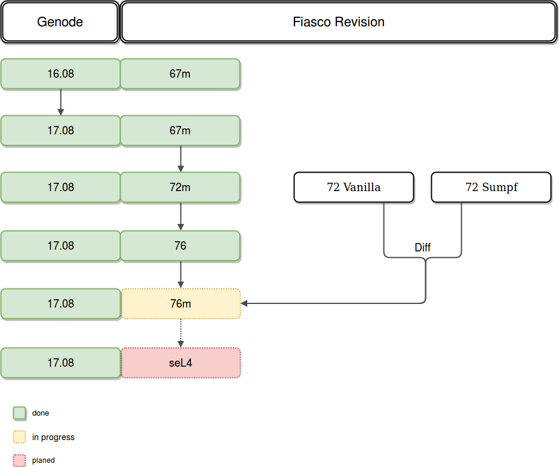

Genode & Fiasco Update
This section covers the updates for Genode and Fiasco.OC.
Agenda
Starting with the Genode version 16.08 and Fiasco.OC revision 67m (m stands for modified by the chair), the Genode version was updated first. After that the Fiasco.OC has been updated step by step. Eventually the Fiasco.OC should be replaced by seL4.

Setup
To set up your system, please follow the steps on the ArgOS-research website.
The newest version is available from this github repository.
There is also an issue describing the current state of the work.
Commands
Here is an compilation of commands to compile and to work with the code:
lightweight OS without userland:
operating-system$ make -C build/genode-focnados_pbxa9/ run/X
compiled images are in
operating-system/build/genode-focnados_pbxa9/var/run/dom0-HW$
include repos are in
operating-system/build/genode-focnados_pbxa9/etc$ build.conf
run hello_tutorial
operating-system$ make -C build/genode-foc_pbxa9/ run/hello
create build directory
operating-system$ make jenkins_build_dir
Structure of directories
There are several directories in the path operating-system/genode/contrib/foc-02548d06466a0c48d445decb8c42eced48181dfa/src/kernel:
focr76-work-in-progress versionfoc_r72original r72 versionfoc_r72_andreasworking version of r72. Rename this folder to foc in order to run a working kernel. Rename the current foc direcctory in order to prevent data lossfoc_r72_sumpfmodified version of r72, taken from herefoc_r76_backup_modifiedversion with the applied diffs from r72 vanilla version and the r72 sumpf version, but without any further changes to make it compilefoc_r76_backup_unmodifiedoriginal version of the r76, taken via svn from here